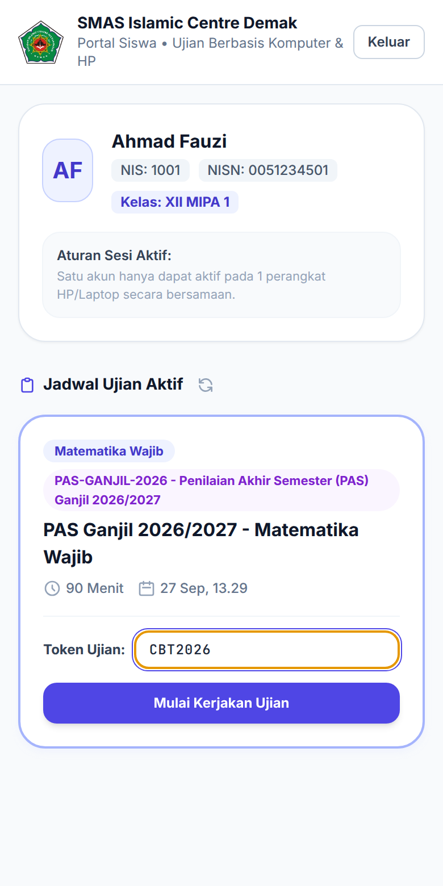
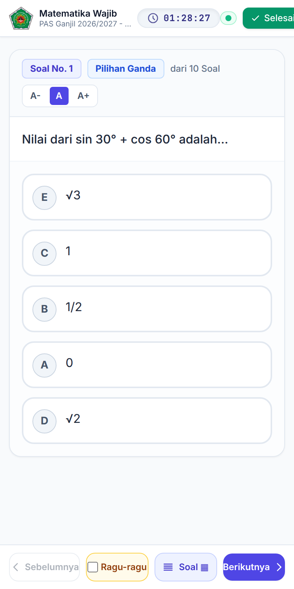

2.1
Masuk Akun dan Memulai Ujian
Kapan dipakai: di awal setiap sesi ujian, setelah pengawas ruang mengumumkan token.

Halaman masuk

Jadwal & token

Soal pertama terbuka
- 1Masuk dengan akun Anda
Isi NIS / No. Ujian / Username dan Kata Sandi, lalu ketuk Masuk ke Sistem Ujian. Jika memindai QR pada kartu peserta, kolom username sudah terisi otomatis.
- 2Temukan ujian di Jadwal Ujian Aktif
Cocokkan mata pelajaran, durasi, dan jam mulai. Jika daftar masih kosong, ketuk ikon muat ulang di samping judul.
- 3Ketik token dari pengawas
Masukkan token pada kolom Token Ujian, contohnya CBT2026. Huruf besar atau kecil tidak berpengaruh.
- 4Ketuk Mulai Kerjakan Ujian
Layar berpindah ke mode penuh dan soal pertama tampil. Waktu hitung mundur di bagian atas mengikuti jam server, bukan jam HP.
Info
Urutan soal dan pilihan jawaban setiap siswa bisa berbeda. Ini disengaja, jadi tidak perlu dicocokkan dengan teman.
Perhatian
Satu akun hanya aktif di satu perangkat. Jangan masuk dari HP lain; minta pengawas mereset jika perangkat bermasalah.
| Pesan di layar | Yang perlu dilakukan |
|---|---|
| Token Belum Diisi | Isi kolom token sebelum mengetuk tombol mulai. |
| Token ujian salah atau tidak valid | Periksa ulang ejaan token, tanyakan kembali ke pengawas. |
| Jadwal ujian belum dimulai atau sudah berakhir | Tunggu jam mulai; jika sudah lewat, lapor ke pengawas. |